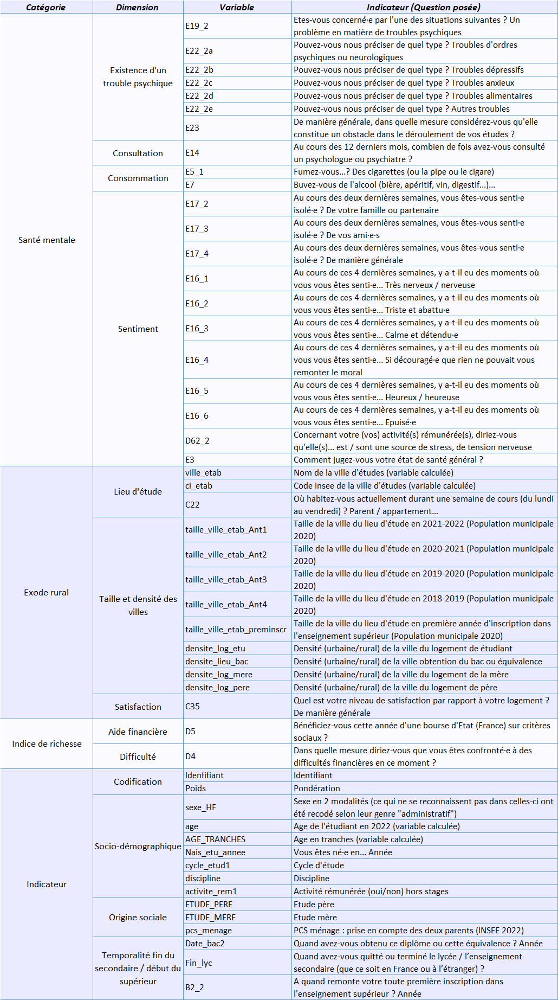

Code
# Première importation des données
rm(list=ls())
setwd("C:/Users/Tom MASSOUBRE/OneDrive/Bureau/Master MASSPOP/Semestre 2/TER/Données/lil-1727-Donnees_CSV")
cdv <- read.csv("cdv2023.csv", sep = ";")Données issues de l’enquête Conditions de vie des étudiants 2023, produite par l’Observatoire national de la vie étudiante (OVE).
# Première importation des données
rm(list=ls())
setwd("C:/Users/Tom MASSOUBRE/OneDrive/Bureau/Master MASSPOP/Semestre 2/TER/Données/lil-1727-Donnees_CSV")
cdv <- read.csv("cdv2023.csv", sep = ";")nrow(cdv)[1] 49523ncol(cdv)[1] 935La base de données contient 49 523 lignes correspondants aux 49 523 répondants à l’enquête. Le base de données contient 935 colonnes correspondants aux 935 variables. Certaines questions sont à choix multiples (exemple : la nationalité de naissance, il est possible d’avoir plusieurs nationalités), dans ce cas la la questions est démultiplié en plusieurs variables (nationalité1, nationalité2…).
Une récente étude de l’Institut Mondor de recherche Biomédicale et de l’Institut National de la Santé Et de la Recherche Médicale révèle que vivre en milieu urbain triple le risque de développer une maladie mentale et soulignent un lien préoccupant entre réchauffement climatique, pollution atmosphérique et aggravation des troubles psychiatriques. [La relève et la peste] Ce constat nous a conduit à nous questionner sur la crise de la santé mentale en cours chez les jeunes et la contrainte qu’ont de nombreux étudiants ruraux à devoir quitter leurs milieu d’origine pour pouvoir accéder à l’enseignement supérieur. Nous avons ainsi formuler trois questions de départ :
Les étudiants contraints à partir loin de là où ils ont grandi sont davantage sujet aux troubles de la santé mentale.
Le changement brutal entre milieu rurale et milieu urbain a t-il des répercussions sur la santé mentale des étudiants ?
Les personnes grandissant en ville, qui n’ont pas besoin de déménager pour leurs études, sont elles moins sujet aux troubles de la santé mentale ?
33% de la population française vie en zone rurale et se voit contraint de devoir tout changer pour accéder aux études supérieures : changer de cadre de vie, de milieu, s’éloigner de ses proches peut etre extremement stressant et perturbant lorsque l’on n’a jamais vu autre chose que sa campagne.
Nous pouvons alors définir trois hypothèses :
H1 : Les étudiants d’origine rurales sont davantage sujets aux troubles de la santé mentale.
H2 :
Notre travail va se pencher principalement sur deux grands concepts :
Les troubles psychiques definit comme étant un état durant lequel un individu est dans l’incapacité de s’adapter aux situations difficiles voire, douloureuses et de maintenir son équilibre psychique.
L’exode rural définit comme toute migration d’une zone rurale vers une zone urbaine.

#Construction de notre base de données
tercdv <- cdv[,c("identifiant", "poids", "sexe_HF", "age", "AGE_TRANCHES", "Nais_etu_annee", "cycle_etud1", "discipline", "activite_rem1", "ETUDE_PERE", "ETUDE_MERE", "pcs_menage", "Date_bac2", "B2_2", "E19_2","E22_2a", "E22_2b", "E22_2c", "E22_2d", "E22_2e", "E23", "E14", "E5_1", "E7", "E17_2", "E17_3", "E17_4", "E16_1", "E16_2", "E16_3", "E16_4", "E16_5", "E16_6", "D62_2", "E3", "ville_etab", "ci_etab", "C22", "taille_ville_etab_Ant1", "taille_ville_etab_Ant2", "taille_ville_etab_Ant3", "taille_ville_etab_Ant4", "taille_ville_etab_preminscr", "densite_log_etu", "densite_lieu_bac", "densite_log_mere", "densite_log_pere", "C35", "D5", "D4")]
tercdv$E19_2 <- factor(tercdv$E19_2,
levels = c(0, 1),
labels = c("Non", "Oui"))
tercdv$E22_2a <- factor(tercdv$E22_2a,
levels = c(0, 1),
labels = c("Non", "Oui"))
tercdv$E22_2b <- factor(tercdv$E22_2b,
levels = c(0, 1),
labels = c("Non", "Oui"))
tercdv$E22_2c <- factor(tercdv$E22_2c,
levels = c(0, 1),
labels = c("Non", "Oui"))
tercdv$E22_2d <- factor(tercdv$E22_2d,
levels = c(0, 1),
labels = c("Non", "Oui"))
tercdv$E22_2e <- factor(tercdv$E22_2e,
levels = c(0, 1),
labels = c("Non", "Oui"))
tercdv$E23 <- factor(tercdv$E23,
levels = c(1, 2, 3, 4, 5),
labels = c("Pas un obstacle du tout","2","3","4", "Gros obstacle"))
tercdv$E5_1 <- factor(tercdv$E5_1,
levels = c(1, 2, 3, 4),
labels = c("Tous les jours", "Au moins une fois par semaine", "Moins souvent", "Je ne fume pas"))
tercdv$E7 <- factor(tercdv$E7,
levels = c(1, 2, 3, 4),
labels = c("Tous les jours", "Au moins une fois par semaine", "Moins souvent", "Je ne fume pas"))
tercdv$E17_2 <- factor(tercdv$E17_2,
levels = c(1, 2, 3, 4, 5),
labels = c("Tout le temps", "Souvent", "Quelques fois", "Rarement", "Jamais"))
tercdv$E17_3 <- factor(tercdv$E17_3,
levels = c(1, 2, 3, 4, 5),
labels = c("Tout le temps", "Souvent", "Quelques fois", "Rarement", "Jamais"))
tercdv$E16_1 <- factor(tercdv$E16_1,
levels = c(1, 2, 3, 4, 5),
labels = c("En permanence", "Souvent", "Quelques fois", "Rarement", "Jamais"))
tercdv$E16_2 <- factor(tercdv$E16_2,
levels = c(1, 2, 3, 4, 5),
labels = c("En permanence", "Souvent", "Quelques fois", "Rarement", "Jamais"))
tercdv$E16_3 <- factor(tercdv$E16_3,
levels = c(1, 2, 3, 4, 5),
labels = c("En permanence", "Souvent", "Quelques fois", "Rarement", "Jamais"))
tercdv$E16_4 <- factor(tercdv$E16_4,
levels = c(1, 2, 3, 4, 5),
labels = c("En permanence", "Souvent", "Quelques fois", "Rarement", "Jamais"))
tercdv$E16_5 <- factor(tercdv$E16_5,
levels = c(1, 2, 3, 4, 5),
labels = c("En permanence", "Souvent", "Quelques fois", "Rarement", "Jamais"))
tercdv$E16_6 <- factor(tercdv$E16_6,
levels = c(1, 2, 3, 4, 5),
labels = c("En permanence", "Souvent", "Quelques fois", "Rarement", "Jamais"))
tercdv$D62_2 <- factor(tercdv$D62_2,
levels = c(0, 1),
labels = c("Non", "Oui"))
tercdv$E3 <- factor(tercdv$E3,
levels = c(1, 2, 3, 4, 5),
labels = c("Très mauvais", "Mauvais", "Moyen", "Bon", "Très bon"))
tercdv$ville_etab <- factor(tercdv$ville_etab,
levels = -99,
labels = "Etranger")
tercdv$C22 <- factor(tercdv$C22,
levels = c(1, 2, 3, 4, 5, 6, 7),
labels = c("Chez mes deux parents ou tuteurs", "Chez ma mère ou tutrice", "Chez mon père ou tuteur", "Dans un logement indépendant", "En résidence collective", "Je n'ai pas de logement", "Autre situation"))
tercdv$taille_ville_etab_Ant1 <- factor(tercdv$taille_ville_etab_Ant1,
levels = c(-999, 1, 2, 3, 4, 5, 6, 7),
labels = c("Etranger","Paris", "Région parisienne : Petite Couronne", "Région parisienne : Grande Couronne", "Communes de plus de 300 000 habitants", "Communes de 200 001 à 300 000 habitants", "Communes de 100 000 à 200 000 habitants", "Communes de moins de 100 000 habitants"))
tercdv$taille_ville_etab_Ant2 <- factor(tercdv$taille_ville_etab_Ant2,
levels = c(-999, 1, 2, 3, 4, 5, 6, 7),
labels = c("Etranger","Paris", "Région parisienne : Petite Couronne", "Région parisienne : Grande Couronne", "Communes de plus de 300 000 habitants", "Communes de 200 001 à 300 000 habitants", "Communes de 100 000 à 200 000 habitants", "Communes de moins de 100 000 habitants"))
tercdv$taille_ville_etab_Ant3 <- factor(tercdv$taille_ville_etab_Ant3,
levels = c(-999, 1, 2, 3, 4, 5, 6, 7),
labels = c("Etranger","Paris", "Région parisienne : Petite Couronne", "Région parisienne : Grande Couronne", "Communes de plus de 300 000 habitants", "Communes de 200 001 à 300 000 habitants", "Communes de 100 000 à 200 000 habitants", "Communes de moins de 100 000 habitants"))
tercdv$taille_ville_etab_Ant4 <- factor(tercdv$taille_ville_etab_Ant4,
levels = c(-999, 1, 2, 3, 4, 5, 6, 7),
labels = c("Etranger","Paris", "Région parisienne : Petite Couronne", "Région parisienne : Grande Couronne", "Communes de plus de 300 000 habitants", "Communes de 200 001 à 300 000 habitants", "Communes de 100 000 à 200 000 habitants", "Communes de moins de 100 000 habitants"))
tercdv$taille_ville_etab_preminscr <- factor(tercdv$taille_ville_etab_preminscr,
levels = c(-999, 1, 2, 3, 4, 5, 6, 7),
labels = c("Etranger","Paris", "Région parisienne : Petite Couronne", "Région parisienne : Grande Couronne", "Communes de plus de 300 000 habitants", "Communes de 200 001 à 300 000 habitants", "Communes de 100 000 à 200 000 habitants", "Communes de moins de 100 000 habitants"))
tercdv$densite_log_etu <- factor(tercdv$densite_log_etu,
levels = c(1, 2, 3, 4, 5, 6, 7, 8, 9),
labels = c("Rurale éloignée très peu dense", "Rurale éloignée peu dense", "Rurale périphérique très peu dense", "Rurale périphérique peu dense", "Urbaine - Bourg", "Urbaine - Petite ville", "Urbaine périphérique peu dense", "Urbaine dense", "Urbaine très dense"))
tercdv$densite_lieu_bac <- factor(tercdv$densite_lieu_bac,
levels = c(1, 2, 3, 4, 5, 6, 7, 8, 9),
labels = c("Rurale éloignée très peu dense", "Rurale éloignée peu dense", "Rurale périphérique très peu dense", "Rurale périphérique peu dense", "Urbaine - Bourg", "Urbaine - Petite ville", "Urbaine périphérique peu dense", "Urbaine dense", "Urbaine très dense"))
tercdv$densite_log_mere <- factor(tercdv$densite_log_mere,
levels = c(1, 2, 3, 4, 5, 6, 7, 8, 9),
labels = c("Rurale éloignée très peu dense", "Rurale éloignée peu dense", "Rurale périphérique très peu dense", "Rurale périphérique peu dense", "Urbaine - Bourg", "Urbaine - Petite ville", "Urbaine périphérique peu dense", "Urbaine dense", "Urbaine très dense"))
tercdv$densite_log_pere <- factor(tercdv$densite_log_pere,
levels = c(1, 2, 3, 4, 5, 6, 7, 8, 9),
labels = c("Rurale éloignée très peu dense", "Rurale éloignée peu dense", "Rurale périphérique très peu dense", "Rurale périphérique peu dense", "Urbaine - Bourg", "Urbaine - Petite ville", "Urbaine périphérique peu dense", "Urbaine dense", "Urbaine très dense"))
tercdv$C35 <- factor(tercdv$C35,
levels = c(1, 2, 3, 4, 5),
labels = c("Pas du tout satisfait(e)", "Peu satisfait(e)", "Neutre", "Satisfait(e)", "Tout à fait satisfait(e)"))
tercdv$D5 <- factor(tercdv$D5,
levels = c(1, 2, 3),
labels = c("Oui", "Non, elle m'a été supprimée ou refusée", "Non, je n'en ai pas demandé / je ne suis pas éligible"))
tercdv$D4 <- factor(tercdv$D4,
levels = c(1, 2, 3, 4, 5),
labels = c("Très importantes", "Importantes", "Moyennement importantes", "Peu de difficulté", "Aucune difficulté"))
tercdv$sexe_HF <- factor(tercdv$sexe_HF,
levels = c(1, 2),
labels = c("Un homme", "Une femme"))
tercdv$AGE_TRANCHES <- factor(tercdv$AGE_TRANCHES,
levels = c(17, 18, 19, 20, 21, 22, 23, 24, 25, 26, 27),
labels = c("Moins de 18 ans", "18 ans", "19 ans", "20 ans", "21 ans", "22 ans", "23 ans", "24 ans", "25 ans", "26 ans", "Plus de 26 ans"))
tercdv$cycle_etud1 <- factor(tercdv$cycle_etud1,
levels = c(1, 2, 3, 4, 5),
labels = c("Cycle 0", "Cycle 1, 1ère inscription", "Cycle 1, hors 1ère inscription", "Cycle 2", "Cycle 3"))
tercdv$discipline <- factor(
tercdv$discipline,
levels = as.character(1:206),
labels = c(
"AGRO-ALIMENTAIRE",
"ACOUSTIQUE",
"BASE SCIENTIFIQUE DOUBLE COMPETENCE",
"BIOCHIMIE",
"BIOLOGIE",
"CHIMIE",
"ELECTRONIQUE, ELECTROTECHNIQUE ET AUTOMATIQUE (EEA)",
"ENERGIE, ÉNERGÉTIQUE",
"GÉNIE CIVIL",
"GEOLOGIE",
"INFORMATIQUE",
"INGENIEUR",
"MATHEMATIQUES",
"MATHEMATIQUES APPLIQUEES",
"MATHEMATIQUES APPLIQUÉES ET SCIENCES SOCIALES (MASS)",
"MATHEMATIQUES FONDAMENTALES",
"MATHS PHYSIQUES",
"MECANIQUE",
"PHYSIOLOGIE ANIMALE",
"PHYSIQUE",
"PHYSIQUE APPLIQUEE",
"PHYSIQUE CHIMIE",
"SCIENCES DE LA VIE",
"SCIENCES DE LA TERRE ET DE LA NATURE",
"SCIENCES DE LA MATIÈRE",
"SCIENCES NATURELLES",
"SCIENCES PHYSIQUES",
"SPORTS",
"STAPS",
"STATISTIQUES, PROBABILITÉS",
"TECHNOLOGIE",
"TECHNOLOGIES INDUSTRIELLES",
"TRANSPORTS, LOGISTIQUES",
"LETTRES",
"LETTRES CLASSIQUES",
"LETTRES MODERNES",
"SCIENCE DU LANGAGE",
"SCIENCES DE L'EDUCATION",
"PHILOSOPHIE",
"PSYCHOLOGIE",
"DEMOGRAPHIE",
"SOCIOLOGIE",
"ANTHROPOLOGIE",
"ETHNOLOGIE",
"GEOGRAPHIE",
"HISTOIRE",
"HISTOIRE COMTEMPORAINE",
"HISTOIRE MODERNE",
"HISTOIRE MEDIEVALE",
"HISTOIRE ANCIENNE",
"HISTOIRE SOURCES",
"PREHISTOIRE",
"LANGUES VIVANTES ETRANGERES (LVE) - ANGLAIS",
"LANGUES VIVANTES ETRANGERES (LVE) - ALLEMAND",
"LANGUES VIVANTES ETRANGERES (LVE) - ESPAGNOL",
"LANGUES VIVANTES ETRANGERES (LVE) - ITALIEN",
"LANGUES VIVANTES ETRANGERES (LVE) - AUTRES LANGUES",
"LANGUES VIVANTES ETRANGERES (LVE) - 2 LANGUES",
"LANGUES, LITTÉRATURES, CIVILISATIONS ETRANGÈRES (LLCE) - ANGLAIS",
"LANGUES, LITTÉRATURES, CIVILISATIONS ETRANGÈRES (LLCE) - ALLEMAND",
"LANGUES, LITTÉRATURES, CIVILISATIONS ETRANGÈRES (LLCE) - ESPAGNOL",
"LANGUES, LITTÉRATURES, CIVILISATIONS ETRANGÈRES (LLCE) - ITALIEN",
"LANGUES, LITTÉRATURES, CIVILISATIONS ETRANGÈRES (LLCE) - AUTRE LANGUE",
"LANGUES, LITTÉRATURES, CIVILISATIONS ETRANGÈRES (LLCE) - 2 LANGUES",
"LANGUES ETRANGÈRES APPLIQUÉES (LEA)",
"LANGUES ETRANGÈRES APPLIQUÉES (LEA) - ANGLAIS",
"LANGUES ETRANGÈRES APPLIQUÉES (LEA) - ALLEMAND",
"LANGUES ETRANGÈRES APPLIQUÉES (LEA) - ESPAGNOL",
"LANGUES ETRANGÈRES APPLIQUÉES (LEA) - ITALIEN",
"LANGUES ETRANGÈRES APPLIQUÉES (LEA) - AUTRE LANGUE",
"LANGUES ETRANGÈRES APPLIQUÉES (LEA) ANGLAIS - ALLEMAND",
"LANGUES ETRANGÈRES APPLIQUÉES (LEA) ANGLAIS - ESPAGNOL",
"LANGUES ETRANGÈRES APPLIQUÉES (LEA) ANGLAIS - ITALIEN",
"LANGUES ETRANGÈRES APPLIQUÉES (LEA) ANGLAIS - AUTRES LANGUES",
"LANGUES ETRANGÈRES APPLIQUÉES (LEA) ANGLAIS - 2 LANGUES",
"LANGUES ETRANGÈRES APPLIQUÉES (LEA) 3 LANGUES",
"FRANÇAIS LANGUE ETRANGÈRE (FLE)",
"ARTS PLASTIQUES",
"MUSIQUE",
"HISTOIRE DE L'ART",
"INFORMATION",
"ART DU SPECTACLE ET AUDIOVISUEL",
"ARTS APPLIQUES",
"ART, ART ET CULTURE, CULTURE",
"TOURISME",
"URBANISME",
"AMENAGEMENT",
"ADMINISTRATION ECONOMIQUE ET SOCIALE (AES)",
"ADMINISTRATION ET ECHANGES INTERNATIONAUX",
"ADMINISTRATION PUBLIQUE",
"CARRIERES JUDICIAIRES",
"COMPTABILITE",
"DROIT & LANGUES",
"DROIT & SCIENCES POLITIQUES",
"DROIT DES AFFAIRES",
"DROIT INTERNATIONAL ET COMPARE",
"DROIT NOTARIAL",
"DROIT PRIVE",
"DROIT PRIVE ET PUBLIC",
"DROIT PUBLIC",
"DROIT SOCIAL",
"DROIT-ECONOMIE & LANGUES (BI-DEUG)",
"DROIT",
"FINANCE",
"GESTION",
"MANAGEMENT / MANAGEMENT & GESTION / ECONOMIE & MANAGEMENT",
"ORGANISATION ET ADMINISTRATION DES ENTREPRISES",
"RELATIONS INTERNATIONALES",
"SCIENCES ECONOMIQUES",
"SCIENCES ECONOMIQUES ET GESTION",
"SCIENCES POLITIQUES",
"MEDECINE",
"PHARMACIE",
"DENTAIRE",
"KINESITHERAPEUTE",
"INFIRMIER",
"PSYCHOMOTRICITE",
"ORTHOPHONISTE",
"ORTHOPTISTE",
"STAPS",
"ECOLE VÉTÉRINAIRE",
"AUTRES FILIERES MEDICALES",
"AUTRES FILIERES PARA-MEDICALES",
"AGRICULTURE AGROALIMENTAIRE",
"CHIMIE-GÉNIE DES PROCÉDÉS",
"GÉNIE BIOLOGIQUE-GÉNIE MÉDICAL-SANTÉ",
"SCIENCES DE LA TERRE",
"MATÉRIAUX",
"GÉNIE CIVIL-BÂTIMENT-AMÉNAGEMENT-ENVIRONNEMENT",
"MÉCANIQUE-ENERGÉTIQUE",
"ELECTRICITÉ-ELECTRONIQUE-ELECTROTECHNIQUE-AUTOMATIQUE",
"TÉLÉCOMS ET RÉSEAUX",
"INFORMATIQUE-SYSTÈMES D'INFORMATION-MATHÉMATIQUES-MODÉLISATION",
"GÉNÉRALISTE",
"GÉNIE ÉLECTRIQUE ET INFORMATIQUE INDUSTRIELLE",
"GÉNIE MATHÉMATIQUE ET INFORMATIQUE",
"GÉNIE CIVIL ET INFRASTRUCTURES",
"GÉNIE MÉCANIQUE",
"GÉNIE DES MATÉRIAUX",
"GÉNIE CHIMIQUE",
"GÉNIE DE L'ENVIRONNEMENT",
"GÉNIE DES SYSTÈMES INDUSTRIELS",
"INGÉNIERIE DE LA SANTÉ",
"INGÉNIERIE DE L'INFORMATION ET DE LA COMMUNICATION",
"INGÉNIERIE DE LA BANQUE, DE LA FINANCE ET DE L'ASSURANCE",
"INGÉNIERIE DU TRANSPORT, DE L'HÔTELLERIE ET DU TOURISME",
"INGÉNIERIE DU MANAGEMENT",
"INGÉNIERIE DU COMMERCE ET DE LA VENTE",
"INGÉNIERIE ÉCONOMIQUE",
"CAPEPS",
"CAPES ECO DROIT",
"CAPES LANGUES",
"CAPES LETTRES, SC. LANGAGE, ARTS",
"CAPES SCIENCES",
"CAPES SHS",
"CAPET CAPLP",
"CPE",
"CRPE",
"AUTRES SPECIALITES OU DISCIPLINES NON CITEES",
"MARKETING",
"COMMUNICATION",
"IUT - SECONDAIRE (MÉCANIQUE, RÉSEAUX ET TÉLÉCOMMUNICATION, GÉNIE INDUSTRIEL...)",
"IUT - TERTIAIRE (CARRIÈRES SOCIALES, GEA, COMMUNICATION...)",
"IUT - AUTRES",
"CPGE - SCIENTIFIQUES",
"CPGE - LITTÉRAIRES",
"CPGE - COMMERCE",
"CPGE - AUTRES",
"STS - INDUSTRIELLE",
"STS - SERVICES",
"STS- SPECIALITE DISCIPLINAIRE",
"STS - AUTRES",
"ING - AGRICULTURE AGROALIMENTAIRE",
"ING - CHIMIE-GÉNIE DES PROCÉDÉS",
"ING - GÉNIE BIOLOGIQUE-GÉNIE MÉDICAL-SANTÉ",
"ING - SCIENCES DE LA TERRE",
"ING - MATÉRIAUX",
"ING - GÉNIE CIVIL-BÂTIMENT-AMÉNAGEMENT-ENVIRONNEMENT",
"ING - DOUBLE CURSUS ARCHITECTE-INGÉNIEUR",
"ING - MÉCANIQUE-ENERGÉTIQUE",
"ING - ELECTRICITÉ-ELECTRONIQUE-ELECTROTECHNIQUE-AUTOMATIQUE",
"ING - TÉLÉCOMS ET RÉSEAUX",
"ING - INFORMATIQUE-SYSTÈMES D'INFORMATION-MATHÉMATIQUES-MODÉLISATION",
"ING - GÉNÉRALISTE (ING ?)",
"ING - PAS DE SPÉCIALITÉ (ANNÉE COMMUNE)",
"ING - AUTRE",
"COM - ADMINISTRATION, GESTION, COMPTABILITÉ",
"COM - FINANCE, BANQUE, ASSURANCE, AFFAIRES",
"COM - MARKETING",
"COM - COMMERCE, VENTE",
"COM - COMMERCE INTERNATIONAL",
"COM - ETUDES, CONSEIL",
"COM - AUDIT",
"COM - RESSOURCES HUMAINES",
"COM - MANAGEMENT",
"COM - APPROVISIONNEMENT, LOGISTIQUE",
"COM - TOURISME",
"COM - COMMUNICATION",
"COM - GÉNÉRALISTE",
"COM - AUTRES",
"ART - ARTS, COMMUNICATION, DESIGN",
"ART - ARCHITECTURE",
"ART - MUSIQUE, DANSE, ART DRAMATIQUE…",
"ART - PATRIMOINE",
"ART - ENSEIGNANTS DE DANSE ET DE MUSIQUE",
"ART - CINEMA ET AUDIOVISUEL"
)
)
tercdv$activite_rem1 <- factor(tercdv$activite_rem1,
levels = c(0, 1),
labels = c("N'a pas eu d'activité rémunérée", "A eu un activité rémunérée"))
tercdv$ETUDE_PERE <- factor(tercdv$ETUDE_PERE,
levels = c(1, 2, 3, 4, 5, 6),
labels = c("Fin d'études primaires ou avant", "Etudes secondaires niveau BEPC", "Etudes techniques niveau CAP/BEP", "Etudes secondaires niveau baccalauréat", "Etudes professionnelles post-baccalauréat", "Etudes de l'enseignement supérieur"))
tercdv$ETUDE_MERE <- factor(tercdv$ETUDE_MERE,
levels = c(1, 2, 3, 4, 5, 6),
labels = c("Fin d'études primaires ou avant", "Etudes secondaires niveau BEPC", "Etudes techniques niveau CAP/BEP", "Etudes secondaires niveau baccalauréat", "Etudes professionnelles post-baccalauréat", "Etudes de l'enseignement supérieur"))
tercdv$pcs_menage <- factor(tercdv$pcs_menage,
levels = c(1, 2, 3, 4, 5, 6, 7),
labels = c("Ménages à dominante cadre", "Ménages à dominante intermédiaire", "Ménages à dominante employée", "Ménages à dominante indépendante", "Ménages à dominante ouvrière", "Ménages d'un employé ou ouvrier", "Ménages d'inactifs"))knitr::kable(head(tercdv,5), format = "html", caption = "Aperçu : les 5 premiers individus de notre base de données")| identifiant | poids | sexe_HF | age | AGE_TRANCHES | Nais_etu_annee | cycle_etud1 | discipline | activite_rem1 | ETUDE_PERE | ETUDE_MERE | pcs_menage | Date_bac2 | B2_2 | E19_2 | E22_2a | E22_2b | E22_2c | E22_2d | E22_2e | E23 | E14 | E5_1 | E7 | E17_2 | E17_3 | E17_4 | E16_1 | E16_2 | E16_3 | E16_4 | E16_5 | E16_6 | D62_2 | E3 | ville_etab | ci_etab | C22 | taille_ville_etab_Ant1 | taille_ville_etab_Ant2 | taille_ville_etab_Ant3 | taille_ville_etab_Ant4 | taille_ville_etab_preminscr | densite_log_etu | densite_lieu_bac | densite_log_mere | densite_log_pere | C35 | D5 | D4 |
|---|---|---|---|---|---|---|---|---|---|---|---|---|---|---|---|---|---|---|---|---|---|---|---|---|---|---|---|---|---|---|---|---|---|---|---|---|---|---|---|---|---|---|---|---|---|---|---|---|---|
| T000008 | 0.7885590 | Un homme | 29 | Plus de 26 ans | 1993 | Cycle 3 | ING - MATÉRIAUX | N'a pas eu d'activité rémunérée | Etudes de l'enseignement supérieur | Etudes secondaires niveau BEPC | Ménages à dominante intermédiaire | 2012 | 2012 | Non | NA | NA | NA | NA | NA | NA | 0 | Je ne fume pas | Moins souvent | Jamais | Quelques fois | 5 | Quelques fois | Souvent | Souvent | Jamais | Souvent | Souvent | NA | Très bon | NA | 57757 | Dans un logement indépendant | NA | NA | NA | NA | Etranger | Urbaine très dense | NA | NA | NA | Satisfait(e) | Non, je n'en ai pas demandé / je ne suis pas éligible | Très importantes |
| T000010 | 2.6209794 | Une femme | 23 | 23 ans | 1999 | Cycle 2 | COM - AUDIT | A eu un activité rémunérée | NA | NA | Ménages d'inactifs | 2017 | 2017 | NA | NA | NA | NA | NA | NA | NA | 0 | Je ne fume pas | Je ne fume pas | Jamais | Jamais | 4 | Souvent | Quelques fois | Rarement | Rarement | Quelques fois | En permanence | Oui | Bon | NA | 64445 | Autre situation | Communes de moins de 100 000 habitants | Communes de moins de 100 000 habitants | Etranger | Etranger | Etranger | NA | NA | NA | NA | Tout à fait satisfait(e) | Non, je n'en ai pas demandé / je ne suis pas éligible | Importantes |
| T000018 | 1.6740214 | Une femme | 22 | 22 ans | 2000 | Cycle 1, hors 1ère inscription | COM - COMMERCE INTERNATIONAL | N'a pas eu d'activité rémunérée | Etudes de l'enseignement supérieur | Etudes de l'enseignement supérieur | Ménages à dominante intermédiaire | 2018 | 2019 | Oui | Non | Oui | Non | Oui | Non | 4 | 6 | Je ne fume pas | Je ne fume pas | Quelques fois | Quelques fois | 3 | Quelques fois | Rarement | Quelques fois | En permanence | Jamais | En permanence | NA | Bon | NA | 29232 | Chez ma mère ou tutrice | Communes de 100 000 à 200 000 habitants | Communes de 100 000 à 200 000 habitants | Communes de 100 000 à 200 000 habitants | NA | NA | Urbaine dense | NA | Urbaine dense | Urbaine périphérique peu dense | Neutre | Non, je n'en ai pas demandé / je ne suis pas éligible | Très importantes |
| T000020 | 2.7138768 | Une femme | 20 | 20 ans | 2002 | Cycle 1, hors 1ère inscription | COM - COMMERCE INTERNATIONAL | A eu un activité rémunérée | Etudes secondaires niveau baccalauréat | Etudes professionnelles post-baccalauréat | Ménages à dominante indépendante | 2020 | 2020 | Non | NA | NA | NA | NA | NA | NA | 0 | Je ne fume pas | Au moins une fois par semaine | Rarement | Rarement | 4 | Quelques fois | Quelques fois | Souvent | Rarement | Souvent | Quelques fois | Non | Bon | NA | 29232 | Dans un logement indépendant | Communes de moins de 100 000 habitants | Communes de 100 000 à 200 000 habitants | NA | NA | NA | Urbaine dense | Urbaine très dense | Urbaine très dense | NA | Satisfait(e) | Non, elle m'a été supprimée ou refusée | Moyennement importantes |
| T000030 | 0.6325765 | Un homme | 22 | 22 ans | 2000 | Cycle 1, hors 1ère inscription | IUT - TERTIAIRE (CARRIÈRES SOCIALES, GEA, COMMUNICATION...) | A eu un activité rémunérée | Etudes techniques niveau CAP/BEP | Etudes secondaires niveau baccalauréat | Ménages à dominante indépendante | 2020 | 2020 | Non | NA | NA | NA | NA | NA | NA | 0 | Je ne fume pas | Moins souvent | Rarement | Quelques fois | 3 | Quelques fois | Rarement | Rarement | Quelques fois | Quelques fois | Quelques fois | Non | Bon | NA | 04070 | Dans un logement indépendant | Communes de moins de 100 000 habitants | NA | NA | NA | NA | Urbaine très dense | Rurale périphérique très peu dense | Rurale périphérique peu dense | Rurale périphérique peu dense | Neutre | Non, je n'en ai pas demandé / je ne suis pas éligible | Très importantes |